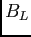

Siguiente:
Agradecimientos
Índice General

Universidad Nacional del Litoral
Facultad de IngenierÃa y Ciencias HÃdricas
IngenierÃa en Informática
Proyecto Final de Carrera
Método para detecciÃ^3n y seguimiento de objetos con aplicaciones en Realidad Aumentada
Autor:
Pfarher, Christian Nicolás
Director:
Dr. Albornoz, Enrique Marcelo
Co-Director:
Dr. MartÃnez, Cesar
<>
02 de Agosto de 2013
Agradecimientos
Resumen
Prefacio
Índice General
Índice de Figuras
Introducción
Motivación
Estado del arte
Conceptos en realidad aumentada
Puntos caracterÃsticos y descriptores
CaracterÃsticas locales
Propiedades de caracterÃsticas locales
Detección y correspondencia de puntos de interés
Búsqueda de correspondencias
Transformación proyectiva
Objetivos del Proyecto Final
Objetivos generales
Objetivos especÃficos
Alcances del Proyecto Final
Fundamentos teóricos
Operaciones morfológicas en imágenes
Dilatación
Erosión
Realce de imágenes en el dominio espacial
Umbral
Transformación logarÃtmica
Ecualización de histograma
Filtrado pasa altos
Filtrado de alta potencia
Detección de puntos claves
Imágenes integrales
El problema de cambio de escala
Invarianza a escala
Puntos claves basados en la matriz hessiana
Determinación de la localización de puntos claves
Descripción de puntos claves
Asignación de la orientación
Creación del descriptor
Correspondencia entre puntos claves
El algoritmo de árboles KD aleatorio
Remoción de correspondencias no válidas
Formación de la imagen y transformación proyectiva
Introducción
El modelo de cámara oscura
Parámetros extrÃnsecos e intrÃnsecos
Transformación proyectiva y estimación de la homografÃa
Estimación de la homografÃa
Método propuesto
Diseño del método
Conversión a escala de grises
Mejoras en la iluminación y realce de detalles
Detección de la región de interés
Diferencia absoluta entre el frame actual y el frame previo
Umbral Binario
Erosión y dilatación
Rectángulo delimitador mÃnimo
Ãrea del rectángulo delimitador mÃnimo
Extracción y descripción de caracterÃsticas
Correspondencia entre puntos claves
Detección de homografÃa
Detección de homografÃas mal estimadas
Convexidad
Distancia entre vértices
Condición de presencia previa
Realidad aumentada en el flujo de video
Transformación Perspectiva
Experimentos y Resultados
Definición de imágenes
Experimentos
Experimento 1
Experimento 2
Implementación de prototipos
Conclusiones y trabajos futuros
Conclusiones
Trabajos futuros
Bibliografía
Sobre este documento...
christian 2014-01-31